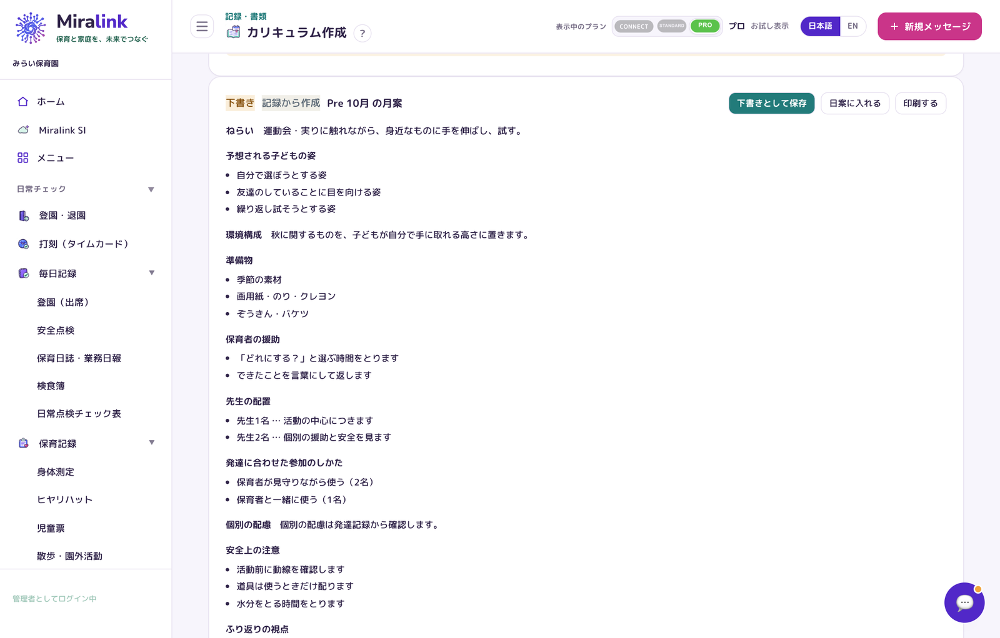
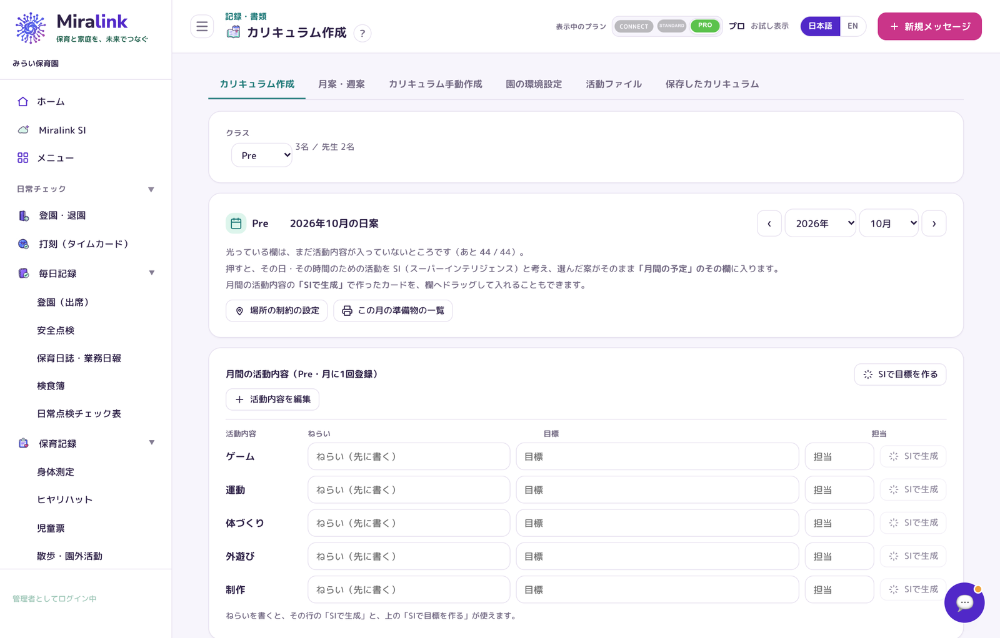
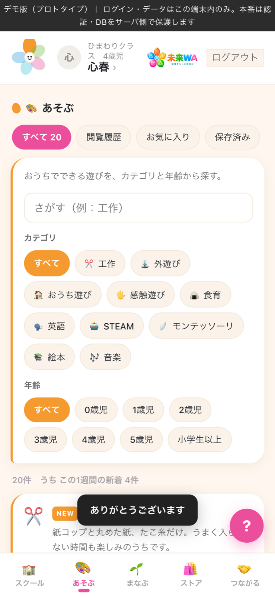

保育士の離職率は 9.3%。じつは全産業（15%）より低い数字です。 問題は「多いかどうか」ではなく、どこで、なぜ辞めているのかが園の手元で見えていないことです。
出典：厚生労働省「保育士の現状と主な取組」／令和4年版 厚生労働白書。 割合は複数回答です。
人間関係も、突然こじれるわけではありません。 誰かに仕事が寄っている状態が続くと、余裕がなくなり、そこから崩れます。
ところが、その「寄り」は園の中でいちばん見えにくいものです。 日誌は紙、残業はタイムカード、シフトはExcel。 誰がどれだけ抱えているかを、月末にまとめて数えるまで誰も知りません。
気づくのは、退職の相談を受けたときです。
先生の入力を増やすのではなく、いま園がすでに書いているものを、そのまま数字にします。
打刻とシフトから、時間外の多い人が出ます。月末を待たずに分かります。
その日つけるべき記録のうち、何がまだ空いているかが毎日出ます。
子どもの人数に対して保育士がそろっていたか。監査で見られるところです。
その月にやるはずのことのうち、まだ済んでいないものが件数で出ます。
子ども・先生・保護者、すべての人が「ここで良かった」と思える未来のために。 先生が子どもと向き合える時間を増やし、保護者が安心して子どもを預けられる場所や、 より良い教育に挑戦し続けられる環境を、全国へ届けます。
月案・週案・日案を、園の記録と年齢から SIが下書きします。先生は直すところだけ直せば仕上がります。
必要な書類がそろっているかを日ごろから確認できます。足りないものと期限が一覧で見えます。
出欠も、おたよりも、園への連絡もひとつのアプリに。送った内容はそのまま園の記録に残ります。
記録・連絡・お金の手間を、ひとつの仕組みで減らします。
登降園・検温・日誌は一度入れれば帳票まで自動。月案・週案は SI（スーパーインテリジェンス）が園に合った下書きを用意します。
必要な書類がそろっているかがひと目で分かり、自治体の様式にも自動で入ります。確定した記録は、直した跡が残ります。
連絡帳・お知らせ・欠席連絡は未来WA に。保育料は期日にカードで自動引き落とし、入金確認も催促もいりません。
朝の登園から月末の請求まで、先生の手を止めていた作業がアプリの中で片付きます。
保護者が押すだけで出席簿に入り、欠席の連絡もアプリで届きます。朝の電話が減ります。
検温・午睡・安全点検・日誌を1つの画面で。手書きの用紙も、撮れば記録に入ります。
一日の様子を未来WA で返すだけ。お便りは配信で届き、印刷・配布がいりません。
請求書は自動で計算し、カード払いのご家庭は期日に引き落とし。監査の書類も日々の記録からそろいます。
くわしい使い方は、資料とオンラインのご説明でお伝えしています。
資料を請求する同じシステムでも、見えるものと助かるところが違います。
保育・教育現場の業務を、SI（スーパーインテリジェンス）とDXで支える業務支援プラットフォームです。 日々の記録から、監査の準備、複数園の管理、経営の分析まで。 園長・主任・保育者、それぞれの立場で必要な画面だけが出るようにしています。

月案・週案・日案の作成、活動アイデアの提案、保護者向け・職員向けの文章づくり。
必要書類チェック、不足書類の確認、監査対策、法令チェック、監査前の診断。
年間・月間スケジュール、タスク管理、提出期限の管理、イベント管理。
複数園の管理、提出状況の確認、書類の管理、園ごとの進み具合の確認。
売上・集客・継続率・人件費・採用・SNSの分析と、SIによる経営の提案。

年間計画のねらいと、その月の週案・日案がずれていないかを自動で確かめます。 監査で必ず見られる「計画と記録の一貫性」を、書きながら保てます。 できあがった計画はそのままA4で印刷できます。
先生・保護者・子どもがつながり、学び、共有できる保育コミュニティプラットフォームです。 保護者アカウントは園が発行します。園からのお知らせも、出欠の連絡も、 教材の購入も、ひとつのアプリにまとめます。
加盟スクールの紹介、教育理念、特徴、写真、地域からの検索。
製作・壁面・食育・英語・感触遊び・STEAM・季節イベント・雨の日の遊び。
教材・保育用品・制服・絵本。イベント用品や衣装、大型遊具のレンタルも。
壁面・ワーク・カード、月案テンプレート、制作テンプレート。
親子イベント、保育者交流会、セミナー、マルシェ、地域交流、相談・事例共有。
出欠と送迎時間の変更は、その場で園の出欠記録に反映されます。 園からのおたよりも、成長の記録も、園がえらんだ教材も同じアプリの中に。 アレルギーや体温などの健康に関する情報は、利用規約とは別に、 目的と提供先をお見せしたうえで個別に同意をいただいてから取り扱います。

園の規模（園児数）と必要な機能に合わせて、導入の前に総額をお見積りします。
複数の園をまとめて導入されたい法人さまは、 個別にお見積りいたします。お問い合わせからご相談ください。
| Connect | Standard | Pro | |
|---|---|---|---|
| 保護者への連絡（未来WA） | ◯ | ◯ | ◯ |
| 保育記録・日常チェック | ◯ | ◯ | ◯ |
| 請求・集金 | ◯ | ◯ | ◯ |
| 監査対応 | — | ◯ | ◯ |
| SI保育計画 | — | ◯ | ◯ |
| 新規顧客管理・営業分析 | — | — | ◯ |
| 園児数の上限 | 60名まで | 60名まで | 上限なし |
| 初期設定・初回研修 | ◯ | ◯ | ◯ |
| 問い合わせサポート | ◯ | ◯ | 優先 |
フォームからご連絡ください。2営業日以内に、担当より折り返しご連絡します。
実際の画面をお見せしながら、園の運用に合うかを一緒に確かめます。30〜45分ほど。
園児数とプランからお見積りをお出しします。個人情報の取り扱いに関する取り決めも同時に結びます。
園児・職員・クラスの登録をこちらで代行し、管理者向けの研修を行ってから運用を始めます。
資料のご請求も、導入のご相談も、このページからお送りいただけます。 ご記入は2分ほど。2営業日以内に、担当よりご連絡します。